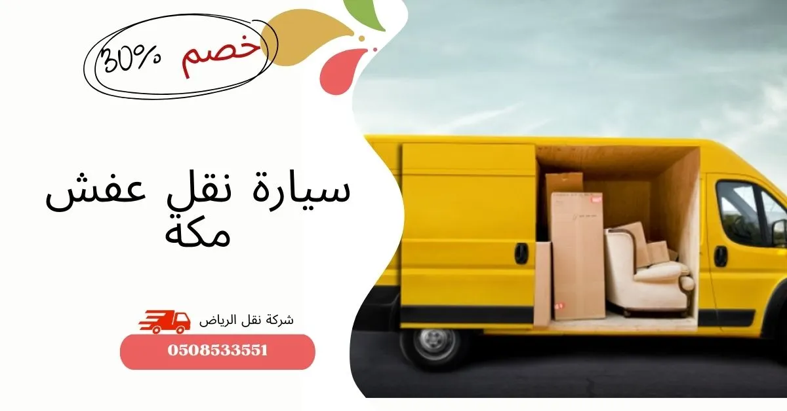

سيارة نقل عفش مكة

تعد عملية نقل العفش من المهام التي تتطلب دقة واحترافية، خاصة عندما يتعلق الأمر بنقل الأثاث من مدينة إلى أخرى، ويواجه العديد من الأشخاص تحديات أثناء هذه العملية مثل كيفية حماية الأثاث من التلف، وضمان وصوله إلى الوجهة المطلوبة في الوقت المحدد، وهنا تبرز أهمية سيارة نقل عفش مكة كحل مثالي يوفر الدعم اللازم لنقل العفش بشكل آمن وسلس، وتقدم شركة نقل الرياض خدمات متكاملة تضمن لعملائها تجربة نقل مريحة وموثوقة، مما يجعلها الخيار الأمثل لكل من يحتاج إلى خدمات نقل احترافية.
ونيت نقل عفش مكة
تعتبر سيارة نقل عفش مكة واحدة من الحلول المثلى للأفراد والعائلات الذين يسعون لنقل أثاثهم بشكل سريع وآمن، ونقدم شركة نقل الرياض خدمات متنوعة تشمل ونش نقل العفش بمختلف الأحجام مما يساعد في تلبية احتياجات العملاء المتنوعة، وتتميز هذه الخدمة بالاحترافية العالية حيث يتم التعامل مع كل قطعة أثاث بعناية واهتمام، وذلك من خلال:
توافر أحجام مختلفة
تقدم الشركة مجموعة من سيارات النقل بمختلف الأحجام، مما يسمح لك باختيار ما يناسب احتياجاتك، وسواء كنت بحاجة لنقل قطعة واحدة من الأثاث أو مجموعة كبيرة تجد الخيار المثالي.
سهولة الوصول
يمكن للسيارة الوصول إلى الأماكن الضيقة والمناطق الحضرية بسهولة مما يجعل عملية النقل أكثر سلاسة، وهذا يوفر لك الوقت والجهد في البحث عن طرق بديلة.
تجهيزات الأمان
سيارات النقل مجهزة بأدوات أمان لضمان حماية الأثاث خلال عملية النقل، وتشمل هذه الأدوات أحزمة لتثبيت الأثاث وأغطية واقية للحماية من الخدوش.
خدمة سريعة
تقدم شركة نقل الرياض خدمات سريعة، حيث تهدف إلى تقليل وقت الانتظار وتوفير تجربة نقل مريحة، و يتم تحديد المواعيد بدقة لضمان عدم تأخير العملية.
فريق عمل محترف
يمتلك فريق العمل خبرة واسعة في التعامل مع جميع أنواع الأثاث مما يضمن لك نقل آمن وبدون أي أضرار، ويتلقى الفريق تدريبًا مستمرًا للتعامل مع التحديات المختلفة أثناء النقل.
ارخص شركة نقل عفش من مكة الى الرياض
عند التفكير في نقل الأثاث من مكة إلى الرياض يبحث الكثيرون عن الخيارات الأكثر تكلفة، وتعتبر سيارة نقل عفش مكة الخيار الأمثل لمن يرغبون في الحصول على خدمات نقل بأسعار معقولة دون المساس بالجودة، وتقدم شركة نقل الرياض أسعار تنافسية تجعلها واحدة من أرخص الشركات في هذا المجال، ويتم ذلك من خلال:
تسعير شفاف
نعتمد الشركة سياسة تسعير شفافة مما يضمن لك عدم وجود تكاليف خفية أو إضافية، ويتم توضيح جميع التكاليف قبل بدء الخدمة، مما يمنحك راحة البال.
عروض خاصة
تقدم الشركة عروضًا خاصة للعملاء الجدد مما يجعل تكلفة النقل أكثر جاذبية، وتشمل هذه العروض خصومات أو خدمات إضافية مجانية تواصل الان واعرف المزيد عن عروض نقل الرياض.
توفير التكاليف
من خلال استخدام سيارات النقل المناسبة يمكن تقليل التكاليف العامة للعملية، كما أن التخطيط الجيد لجدول النقل يساعد في تقليل الوقت المستغرق وبالتالي التكلفة.
خدمات إضافية
تشمل الأسعار بعض الخدمات الإضافية مثل التعبئة والتغليف مما يضيف قيمة إضافية للعرض، ويتضمن ذلك توفير مواد التعبئة مثل الكراتين والأغلفة.
تقييمات إيجابية
حصلت الشركة على تقييمات إيجابية من العملاء الذين أشادوا بجودة الخدمة مقابل السعر، وهذه التقييمات يمكن أن تساعدك في اتخاذ القرار الصحيح.
افضل شركة نقل عفش بمكة
إذا كنت تبحث عن سيارة نقل عفش مكة تقدم أفضل الخدمات فإن شركة نقل الرياض هي الخيار المثالي، وتمتاز الشركة بخبرتها الطويلة في مجال نقل عفش بالرياض مما يجعلها واحدة من الشركات الرائدة في هذا المجال، وتتمتع ب:
- سمعة طيبة: حصلت الشركة على سمعة ممتازة بفضل التزامها بتقديم خدمات عالية الجودة، وهذا يعكس مستوى الاحترافية والموثوقية التي تتمتع بها.
- تجربة عملاء مميزة: تركز الشركة على تقديم تجربة عملاء استثنائية حيث يتم الاستماع إلى احتياجات العملاء بدقة، وتتم متابعة العملاء بعد الخدمة لضمان رضاهم التام.
- شهادات موثوقة: يمكن للعملاء الاطلاع على الشهادات والتقييمات من العملاء السابقين مما يعكس مستوى الخدمة، وهذه الشهادات تعطي إنطباعًا جيدًا عن قوة الشركة ومصداقيتها.
- تكنولوجيا حديثة: تستخدم الشركة أحدث التقنيات في نقل الأثاث لضمان تقديم خدمة فعالة وسريعة، ويشمل ذلك أنظمة تتبع النقل لضمان الشفافية في العملية.
- ضمان السلامة: توفر الشركة ضمانات لسلامة الأثاث أثناء النقل مما يمنح العملاء الثقة في اختياراتهم، ويشمل ذلك تأمين الأثاث ضد الأضرار المحتملة.
سيارة نقل عفش مكة
تعد سيارة نقل عفش مكة من أهم العوامل التي تؤثر على تجربة النقل بشكل عام، وتقدم شركة نقل الرياض مجموعة متنوعة من السيارات المخصصة لنقل الأثاث، مما يسهل عملية النقل ويضمن سلامة القطع، ومن ضمن هذه العوامل:
| تصميم مخصص | تأتي سيارات النقل بتصميم خاص يضمن حماية الأثاث أثناء النقل، ويتم تجهيز السيارات بوسائل للحماية مثل البطانة الداخلية والوسائد الواقية. |
| سعة مناسبة | تتمتع السيارات بسعة مناسبة لنقل كميات كبيرة من الأثاث في رحلة واحدة، مما يقلل من الحاجة إلى القيام بعدة رحلات. |
| سهولة التحميل والتفريغ | تم تصميم السيارات لتسهيل عملية التحميل والتفريغ مما يقلل من الوقت المستغرق، ويتوفر أيضًا رافعات لزيادة الكفاءة. |
| خدمات إضافية | تشمل الخدمات تقديم عمالة مدربة لمساعدتك في عملية النقل مما يوفر عليك الجهد والوقت، ويمكن للعمال أيضًا تقديم نصائح حول كيفية تنظيم الأثاث في السيارة. |
| تأمين الأثاث | تقدم الشركة خيارات تأمين للأثاث مما يضمن لك الأمان الكامل خلال عملية النقل، وهذا يجعلك مطمئنًا لسلامة ممتلكاتك القيمة. |
سيارة نقل عفش صغيرة
لأولئك الذين يحتاجون إلى سيارة نقل عفش مكة بحجم أصغر، تقدم شركة نقل الرياض خيارات ممتازة من السيارات الصغيرة، وهذه السيارات مثالية لنقل الأثاث الخفيف أو في حالات الانتقال القصير، كما أنها تتميز ب:
- مرونة عالية: توفر السيارات الصغيرة مرونة في الوصول إلى الأماكن الضيقة، مما يسهل عملية النقل في المناطق المزدحمة.
- تكلفة منخفضة: تعتبر تكلفة نقل الأثاث باستخدام السيارات الصغيرة أقل مقارنة بالخيارات الأكبر، مما يجعلها خيارًا مفضلًا للعديد من العملاء.
- سهلة القيادة: يسهل قيادتها في المناطق المزدحمة مما يجعلها خيارًا مثاليًا للمدن الكبيرة، وتوفر الشركة سائقين ذوي خبرة لضمان قيادة آمنة.
- توفير الوقت: يمكن إتمام عملية النقل بسرعة أكبر بسبب حجم السيارة، مما يقلل من الوقت الضائع في الانتظار.
- مثالية للطلاب: تعد خيارًا ممتازًا للطلاب أو الأفراد الذين يحتاجون إلى نقل عدد محدود من الأثاث، وتقدم الشركة خصومات خاصة للطلاب لجعل الخدمة في متناول الجميع.
الاسئلة الشائعة حول سيارة نقل عفش مكة
ما هي الخدمات التي تقدمها شركة نقل الرياض لنقل العفش من مكة؟
تقدم شركة نقل الرياض خدمات شاملة تشمل نقل العفش باستخدام سيارات مخصصة تعبئة وتغليف الأثاث وخدمات التحميل والتفريغ، مما يضمن تجربة نقل مريحة وآمنة.
هل توفر الشركة سيارات نقل مختلفة الأحجام؟
نعم توفر شركة نقل الرياض مجموعة متنوعة من سيارات النقل بأحجام مختلفة، مما يسمح للعملاء باختيار السيارة المناسبة وفقًا لحجم الأثاث الذي يرغبون في نقله.
هل هناك خيارات لتأمين الأثاث خلال عملية النقل؟
نعم تقدم شركة نقل الرياض خيارات تأمين للأثاث، مما يضمن حماية ممتلكاتك القيمة خلال عملية النقل من مكة إلى الرياض.
كيف يتم تحديد الأسعار لخدمات النقل؟
تعتمد شركة نقل الرياض سياسة تسعير شفافة، حيث يتم إيضاح جميع التكاليف قبل بدء الخدمة مما يضمن عدم وجود تكاليف خفية أو إضافية.